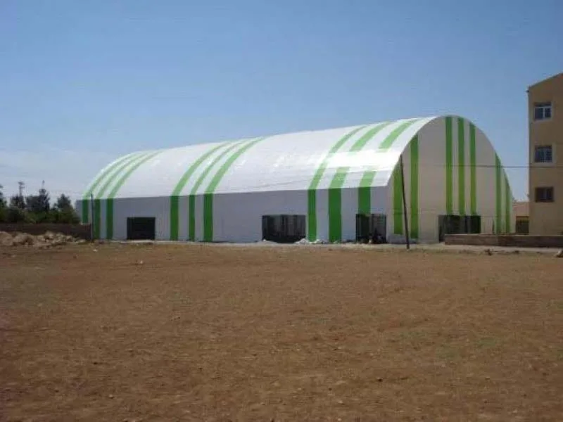

Çadır
Sistemleri
İhtiyaca göre ölçeklenen, hızlı kurulan ve uzun ömürlü profesyonel yapılar.
Alanınıza göre
tasarlanır.
Depolamadan spor alanlarına, etkinlikten tarımsal kullanıma kadar farklı ihtiyaçlar için projeye özel çadır sistemleri üretiyoruz.
Taşıyıcı konstrüksiyon, kaplama malzemesi, zemin ve iklim koşulları birlikte değerlendirilir. Üretim ve montaj sürecinin tamamı tek ekip tarafından yönetilir.
Çadır
galerisi.
Gerçek uygulama ve ürün örneklerimizi inceleyin. Görselleri büyütmek için üzerlerine tıklayabilirsiniz.
Sık sorulan
sorular.
Profesyonel çadır projelerinde kullanım amacı ve teknik planlamayla ilgili temel yanıtlar.
Profesyonel çadır hangi amaçlarla kullanılabilir?
Depolama, etkinlik, yemekhane, spor alanı, üretim ve geçici ya da uzun süreli endüstriyel kullanım için projelendirilebilir.
Çadır projesinde hangi bilgiler değerlendirilir?
Alan ölçüsü, zemin, kullanım amacı, iklim ve rüzgâr koşulları, kapasite, yan kapama ve erişim ihtiyaçları birlikte değerlendirilir.